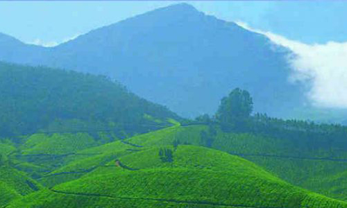

Have any question?
Dial toll free No: +12 365 5233

ABOUT DISTRICT
Thiruananthapuram, the jewel in the emerald necklace that Kerala is for the Indian sub-continent
Thiruananthapuram must surely have Parasuramanbeen a “must see” destination for ages, long before National Geographic Traveller classified it as one. Surely long before Sage Parasurama , according to local legend, threw his divine battle axe from Kanyakumari to Gokarnam to west Kerala, God’s own land, from the Varuna the sea god; before the times of Mahabali the democratic and just ruler of this wonderful land who was sent down to the netherworld through deceit. It doesnt take any flights of fancy to imagine that this land fired the imaginations of intrepid travellers and explorers like Columbus, Vasco da Gama, Marco Polo, Fa Hien, and quite possibly, countless others from the pages of history.

Sree Padmanabha Swami Temple:The origin of the Temple of Sree Padmanabhaswamy is lost in antiquity. It is not possible to determine with any exactitude, from any reliable historical documents or other sources as to when and by whom the original idol of Sree Padmanabhaswamy was consecrated. The Temple has references in Epics and Puranas. Srimad Bhagavatha says that Balarama visited this Temple, bathed in Padmatheertham and made several offerings. Nammalwar, 9th century poet and one among the 12 Vaishnavite saints of the Alvar tradition, has composed ten hymns in praise of Lord Padmanabha.

Ponmudi Hillstation: Ponmudi is a hill station in the Thiruvananthapuram District of Kerala in India. It is located 55.2 km north-east of Trivandrum City at an altitude of 1100 m. Ponmudi peak is a part of the Western Ghats mountain range that runs parallel to the Arabian Sea.
Ponmudi is connected to Trivandrum by a two lane highway (SH2 & SH 45). The last 18km starting from Anapara has scenic views, as it winds through the mountains and tea gardens. The travel along this stretch provides a thrilling experience as drivers and riders have to navigate 22 Hairpin turns. Ponmudi is also a popular spot for backpacking and trekking.

Kovalam Beach Kovalam is an internationally renowned beach with three adjacent crescent beaches. It has been a favourite haunt of tourists since the 1930s. A massive rocky promontory on the beach has created a beautiful bay of calm waters ideal for sea bathing.
The leisure options at this beach are plenty and diverse. Sunbathing, swimming, herbal body toning massages, special cultural programmes and catamaran cruising are some of them. The tropical sun acts so fast that one can see the faint blush of coppery tan on the skin in a matter of minutes. Life on the beach begins late in the day and carries on well into the night.

Sree Chitra Art Gallery: Established in 1935 by the then Maharaja of Travancore, Sree Chithira Thirunal, the Sree Chithra Art Gallery near the Napier Museum displays a rare collection of paintings. Works of acclaimed artists like Raja Ravi Varma, Svetlova and Nicholas Roerich; exquisite works from the Mughal, Rajput and Tanjore schools of art, are on display here. An oriental collection consisting of paintings from China, Japan, Tibet and Bali offers a visual treat and are a tribute to the art and culture of these countries. The collection also includes unique copies of Indian mural paintings from pre-historic times...more